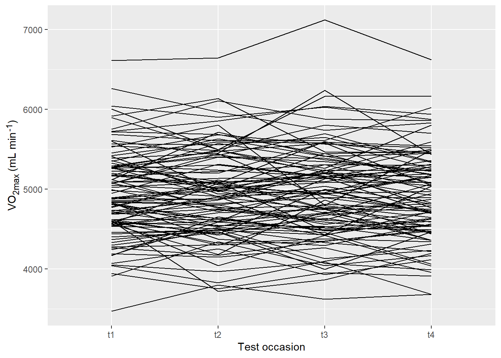
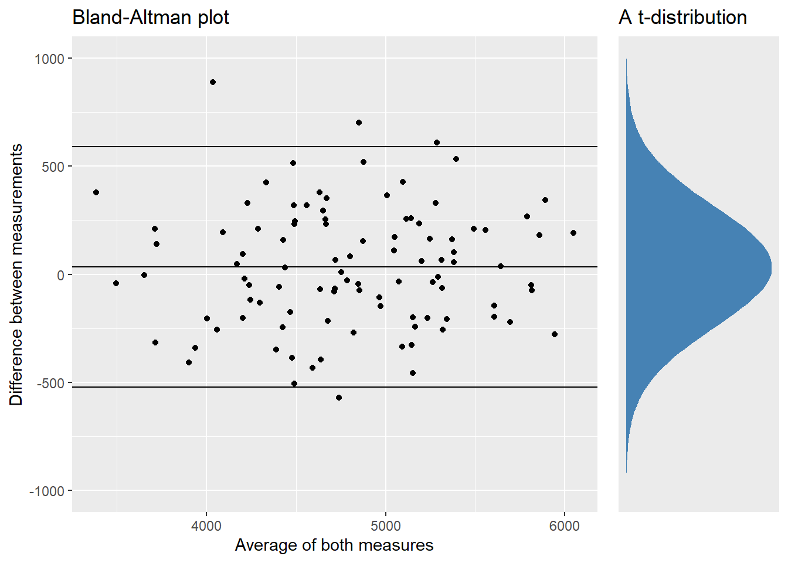
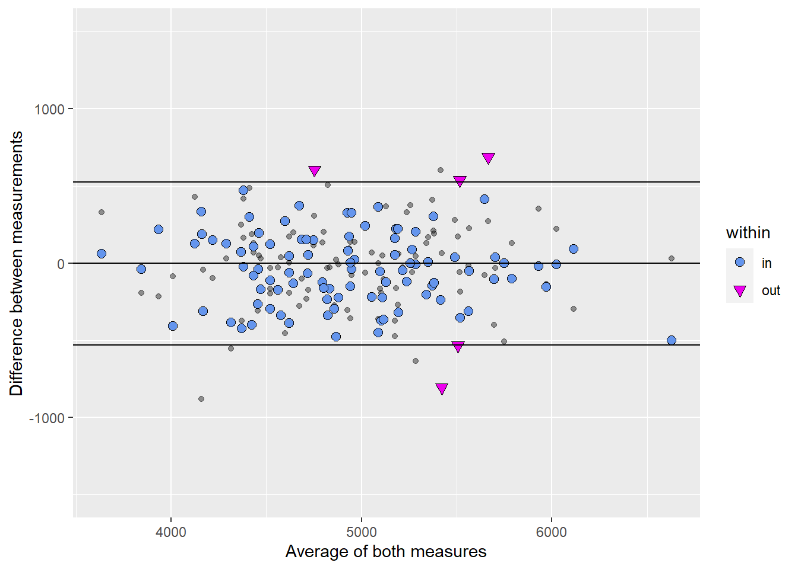

The reliability of a test can provide information on what variation to expect between two repeated measurements. This information can be use to put test results into perspective.
Below we will use simulated data to get an idea of what the measurements mean.
Data simulation
A great thing about R is that you can simulate data. Simulated data take pre specified characteristics, thus adhering to assumptions.
The faux package can be used to simulate variables with a known correlation. We will use this functionality to simulate a reliability study on VO2max. One-hundred participants were tested three times. The average VO2max, between-participant standard deviation and correlation between measurements were approximated from the cyclingstudy dataset.
First we will load required packages.
Code
library(faux) # to simulate datalibrary(tidyverse) # data wrangling/plotting ## library(Hmisc) # a function to calculate a correlation matrixlibrary(cowplot) # for plotting library(ggtext) # for plotting (text formatting)library(lme4) # to calculate the intra-class correlationset.seed(2) # Always set seed when simulating data!
The mean and (SD) VO2max was 4842 (532) mL min-1. The correlations between repeated tests ranged from r = 0.797 to r = 0.966. We will use a correlation of r = 0.85 for our simulations. The data is plotted below.
Code
dat <-rnorm_multi(n =100, varnames =c("t1", "t2", "t3", "t4"), mu =c(avg$m, avg$m, avg$m, avg$m), # averages from cyclingstudy datasetsd =c(avg$s, avg$s, avg$s, avg$s), # sd from cyclingstudy datasetr =0.85) %>%mutate(id =paste0("ID", seq(1:100))) dat %>%pivot_longer(names_to ="time", values_to ="vo2max", cols = t1:t4) %>%ggplot(aes(time, vo2max, group = id)) +geom_line() +labs(x ="Test occasion", y ="VO<sub>2max</sub> (mL min<sup>-1</sup>)") +theme(axis.title.y =element_markdown())

Simulated VO2max data, n = 100
We will use test occasions 1 and 2 to calculate the reliability. Occasion 3 and 4 will be used to test if another test score difference ends up where it is supposed to!
The reliability can be calculated as a typical error (TE):
\[ TE = \frac{SD(\text{Difference score})}{ \sqrt{2}}\]
The TE can be expressed as a percentage of the average (coefficient of variation; CV):
\[\%CV = 100 \times \frac{TE}{M}\]
In R, these are easily calculated in a dplyr pipe.
Code
sum_stat <- dat %>%mutate(diff = t2 - t1) %>%summarise(s =sd(diff), # SD of difference scoresmdiff =mean(diff), # Mean differencem =mean(c(t1, t2)), # Mean of all measurementste = s /sqrt(2), # Typical errorcv =100* (te / m), # Percentage CVL =qt(0.975, 99) * s, # Limits of agreement 95%iisd =mean(c(sd(t1), sd(t2)))) %>%# Mean SD between participantsprint()
s mdiff m te cv L iisd
1 265.3947 -4.333928 4806.635 187.6624 3.904236 526.6006 527.6439
We can plot differences (y-axis) against the overall average per participant (x-axis) to produce a Bland-Altman plot. We also plot the average difference between measurements, and the 95% limits of agreement.
Code
# A plot showing the estimated distribution of the errors (differences)distribution <- dat %>%rowwise() %>%mutate(diff = t2 - t1, avg =mean(c(t1, t2))) %>%ggplot(aes(x = diff)) +scale_x_continuous(limits =c(-1000, 1000)) +stat_function(fun = dnorm, geom ="area",args =list(mean = sum_stat$mdiff, sd = sum_stat$s), fill ="steelblue") +theme(axis.text =element_blank(), axis.title =element_blank(), axis.ticks =element_blank(), panel.grid =element_blank()) +labs(title ="A t-distribution") +coord_flip()bland_altman <- dat %>%rowwise() %>%mutate(diff = t2 - t1, avg =mean(c(t1, t2))) %>%ggplot(aes(avg, diff)) +geom_point() +scale_y_continuous(limits =c(-1000, 1000)) +geom_hline(yintercept = sum_stat$mdiff) +geom_hline(yintercept = sum_stat$mdiff + sum_stat$L) +geom_hline(yintercept = sum_stat$mdiff - sum_stat$L) +labs(x ="Average of both measures", y ="Difference between measurements", title ="Bland-Altman plot")plot_grid(bland_altman, distribution, align ="h", nrow =1, rel_widths =c(1, 0.3))

The distribution is included to give an idea of the assumed distribution of errors (differences) from which the limits of agreements are calculated. These limits can be used to specify a range within 95% of repeated measures will fall from another test. This assumes:
Similar variation
Similar correlation
No bias
Let’s see if we can make this happen with data from test occasion 3 and 4. First we calculate how many test-retests differences are found within 95% limits of agreement. We can then display the “new” data as part of the first Bland-Altman plot.
Code
new_dat <- dat %>%rowwise() %>%mutate(diff = t2 - t1, diff2 = t4 - t3, # calculates the new test data avg =mean(c(t1, t2)), within =if_else(between(diff2, sum_stat$mdiff - sum_stat$L, sum_stat$mdiff + sum_stat$L), "in", "out"))new_dat %>%group_by(within) %>%summarise(n =n())
# A tibble: 2 x 2
within n
<chr> <int>
1 in 97
2 out 3
Code
new_dat %>%ggplot(aes(avg, diff)) +geom_point(alpha =0.4) +geom_point(size =2.5,aes(avg, diff2, shape = within, fill = within)) +scale_shape_manual(values =c(21, 25)) +scale_fill_manual(values =c("cornflowerblue", "magenta2")) +scale_y_continuous(limits =c(-1500, 1500)) +geom_hline(yintercept = sum_stat$mdiff) +geom_hline(yintercept = sum_stat$mdiff + sum_stat$L) +geom_hline(yintercept = sum_stat$mdiff - sum_stat$L) +labs(x ="Average of both measures", y ="Difference between measurements")

TE as an intra-individual variation!
The typical error (or standard error of measurement) of our simulated data is about 3.9% of the mean. We can think of this as the long-run variation in an athlete or patient. If nothing changes most repeated measures will be inside e.g., a 95% range (\(\pm 2 \times SD \approx 95\%\) of all values under a normal distribution).